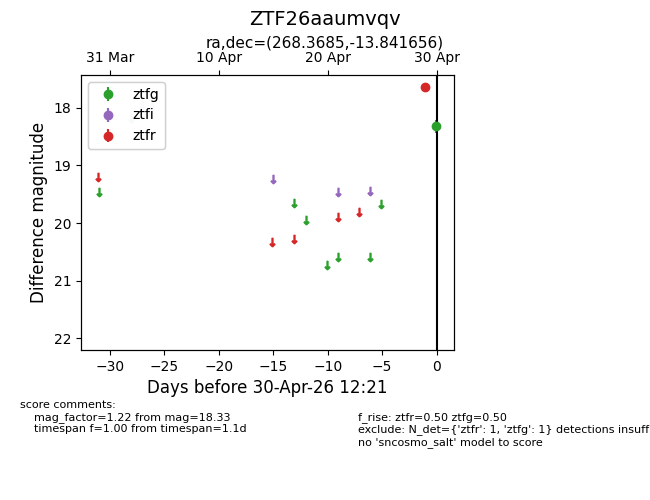
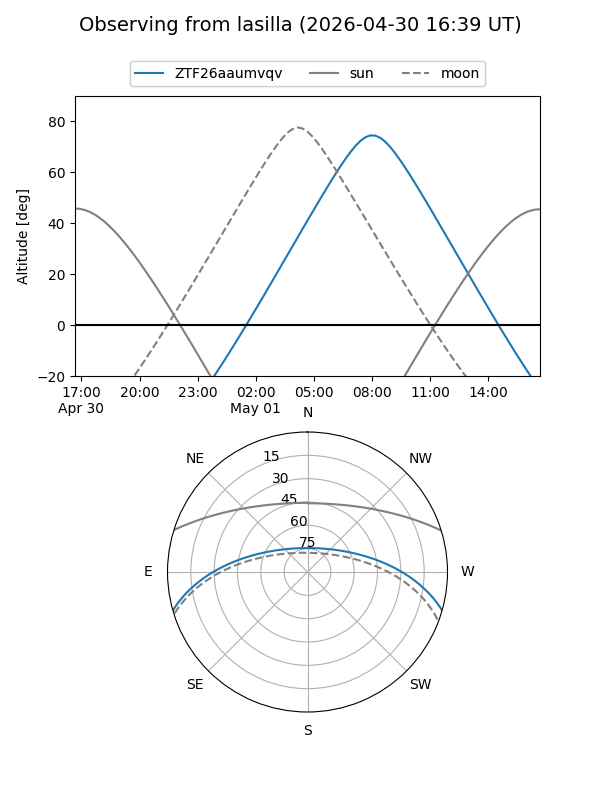
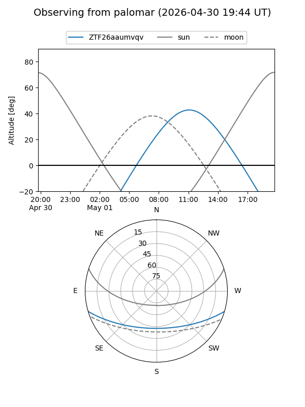
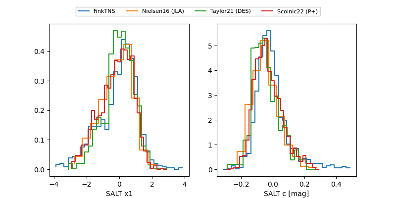

ZTF26aaumvqv
Target ZTF26aaumvqv at 2026-04-30 12:27
Aliases and brokers:
FINK: link
Lasair: link
ALeRCE: link
alt names
ZTF26aaumvqv (ztf,fink_ztf)
Coordinates:
equatorial (ra, dec) = 268.3685,-13.84166
equatorial (HMS+DMS) = 17:53:28.44,-13:50:29.96
galactic (l, b) = (13.9312,+6.15065)
Flags:
Photometry:
last ztfg=18.33, ztfr=17.64
1 ztfg, 1 ztfr detections
Lightcurve

Visibility


Additional plots
